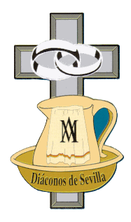

Noticias de la IglesiaComunidad Diaconal- Sevilla -
Titulares ordenados cronológicamente, con enlace a la fuente original.
No se reproduce el contenido de las noticias.
Próximos actos
¿Quieres recibirlos todos en tu móvil? Suscríbete al calendario de actos (una sola vez; se actualiza solo).
- 09 de octubre de 2026 125 Aniversario de la Fundación Penitencial de la Hdad de San Roque Agenda — Archidiócesis de Sevilla Añadir a mi agenda: 📅 iPhone 📅 Android / Google
- 10 de octubre de 2026 Ordenación de un presbítero y diácono de los Sagrados Corazones (Padres Blancos) Agenda — Archidiócesis de Sevilla Añadir a mi agenda: 📅 iPhone 📅 Android / Google
- 12 de octubre de 2026 XXV Aniversario de la dedicación de la Iglesia del Buen Pastor y San Juan de la Cruz, de Sevilla Agenda — Archidiócesis de Sevilla Añadir a mi agenda: 📅 iPhone 📅 Android / Google
- 15 de octubre de 2026 CLERO | Retiro de inicio de curso Agenda — Archidiócesis de Sevilla Añadir a mi agenda: 📅 iPhone 📅 Android / Google
- 16 de octubre de 2026 Eucaristía fiesta patronal de los médicos Agenda — Archidiócesis de Sevilla Añadir a mi agenda: 📅 iPhone 📅 Android / Google
- 21 de octubre de 2026 CLERO | Hermandad San Pedro Ad Vincula Agenda — Archidiócesis de Sevilla Añadir a mi agenda: 📅 iPhone 📅 Android / Google
- 22 de octubre de 2026 Reunión de obispos de la Provincia Eclesiástica de Sevilla Agenda — Archidiócesis de Sevilla Añadir a mi agenda: 📅 iPhone 📅 Android / Google
- 22 de octubre de 2026 Eucaristía fiesta patronal San Juan Pablo II Agenda — Archidiócesis de Sevilla Añadir a mi agenda: 📅 iPhone 📅 Android / Google
- 24 de octubre de 2026 Medalla de Oro de la Villa de Paradas a la Hdad. del Santo Entierro Agenda — Archidiócesis de Sevilla Añadir a mi agenda: 📅 iPhone 📅 Android / Google
- 27 de octubre de 2026 Bendición Casa de Hermanos sin Hogar Agenda — Archidiócesis de Sevilla Añadir a mi agenda: 📅 iPhone 📅 Android / Google
- 29 de octubre de 2026 Conferencia del Cardenal Bettori Agenda — Archidiócesis de Sevilla Añadir a mi agenda: 📅 iPhone 📅 Android / Google
- 02 de noviembre de 2026 Misa en el Cementerio de San Fernando, Sevilla Agenda — Archidiócesis de Sevilla Añadir a mi agenda: 📅 iPhone 📅 Android / Google
- 05 de noviembre de 2026 Consejo de Presbiterio Agenda — Archidiócesis de Sevilla Añadir a mi agenda: 📅 iPhone 📅 Android / Google
- 08 de noviembre de 2026 Coronación canónica de Ntra. Sra. del Amparo Agenda — Archidiócesis de Sevilla Añadir a mi agenda: 📅 iPhone 📅 Android / Google
- 08 de noviembre de 2026 CLERO | Ejercicios Espirituales Agenda — Archidiócesis de Sevilla Añadir a mi agenda: 📅 iPhone 📅 Android / Google
- 09 de noviembre de 2026 CLERO | Encuentro de sacerdotes del Quinquenio Agenda — Archidiócesis de Sevilla Añadir a mi agenda: 📅 iPhone 📅 Android / Google
- 11 de noviembre de 2026 CLERO | Consejo de arciprestes Agenda — Archidiócesis de Sevilla Añadir a mi agenda: 📅 iPhone 📅 Android / Google
- 11 de noviembre de 2026 CLERO | Misa sacerdotes difuntos Agenda — Archidiócesis de Sevilla Añadir a mi agenda: 📅 iPhone 📅 Android / Google
- 18 de noviembre de 2026 CLERO | Hermandad San Pedro Ad Vincula Agenda — Archidiócesis de Sevilla Añadir a mi agenda: 📅 iPhone 📅 Android / Google
- 03 de diciembre de 2026 CLERO | Retiro de adviento Agenda — Archidiócesis de Sevilla Añadir a mi agenda: 📅 iPhone 📅 Android / Google
- 12 de diciembre de 2026 Eucaristía en las Bodas de Plata de ordenación episcopal de Mons. José Ángel Saiz Meneses, Arzobispo de Sevilla Delegación para el Clero Añadir a mi agenda: 📅 iPhone 📅 Android / Google
- 16 de diciembre de 2026 CLERO | Hermandad San Pedro Ad Vincula Agenda — Archidiócesis de Sevilla Añadir a mi agenda: 📅 iPhone 📅 Android / Google
- 24 de diciembre de 2026 Felicitación de Navidad del clero al Sr. Arzobispo Delegación para el Clero Añadir a mi agenda: 📅 iPhone 📅 Android / Google
- 26 de diciembre de 2026 Misa de San Esteban con el Colegio Diaconal Delegación para el Clero Añadir a mi agenda: 📅 iPhone 📅 Android / Google
- 13 de enero de 2027 CLERO | Hermandad San Pedro Ad Vincula Agenda — Archidiócesis de Sevilla Añadir a mi agenda: 📅 iPhone 📅 Android / Google
- 14 de febrero de 2027 CLERO | Ejercicios Espirituales Agenda — Archidiócesis de Sevilla Añadir a mi agenda: 📅 iPhone 📅 Android / Google
- 18 de febrero de 2027 Retiro de Cuaresma del clero (dirige D. Teodoro, Obispo Auxiliar) Delegación para el Clero Añadir a mi agenda: 📅 iPhone 📅 Android / Google
- 24 de febrero de 2027 CLERO | Hermandad San Pedro Ad Vincula Agenda — Archidiócesis de Sevilla Añadir a mi agenda: 📅 iPhone 📅 Android / Google
- 23 de marzo de 2027 Misa Crismal Delegación para el Clero Añadir a mi agenda: 📅 iPhone 📅 Android / Google
- 06 de mayo de 2027 Celebración de San Juan de Ávila (Bodas de Oro y de Plata sacerdotales) Delegación para el Clero Añadir a mi agenda: 📅 iPhone 📅 Android / Google
- 20 de mayo de 2027 Retiro de Jesucristo Sumo y Eterno Sacerdote Delegación para el Clero Añadir a mi agenda: 📅 iPhone 📅 Android / Google
- 27 de mayo de 2027 Solemnidad del Corpus Christi Delegación para el Clero Añadir a mi agenda: 📅 iPhone 📅 Android / Google
- 24 de junio de 2027 CLERO | Hermandad San Pedro Ad Vincula Agenda — Archidiócesis de Sevilla Añadir a mi agenda: 📅 iPhone 📅 Android / Google
Últimas noticias
- 09 de octubre de 2026 Saetas y pétalos para la Fuensanta en la prisión de Campos del Río ODISUR
- 09 de octubre de 2026 Presentación de “El Reloj de la vida” ODISUR
- 09 de octubre de 2026 El Observatorio de la Piedad Popular protagoniza la programación diocesana de COPE Sevilla este fin de semana Archidiócesis de Sevilla
- 09 de octubre de 2026 Celebración en la Capilla Real, para festejar la Virgen del Pilar y Día de la Hispanidad ODISUR
- 09 de octubre de 2026 El secretario del Dicasterio de las Causas de los Santos visita la Catedral de Sevilla y la Biblioteca Colombina Catedral de Sevilla
- 09 de octubre de 2026 Una jornada de gracia y comunión en la fiesta de San Francisco de Asís ODISUR
- 09 de octubre de 2026 Una oportunidad para empezar de nuevo: la Iglesia de Sevilla impulsa los Trabajos en Beneficio de la Comunidad Archidiócesis de Sevilla
- 09 de octubre de 2026 Al Trasluz celebra la fiesta de la Virgen del Pilar, día de la Hispanidad ODISUR
- 09 de octubre de 2026 Evangelio del XXVIII Domingo de Tiempo Ordinario (ciclo A) en Lengua de Signos Española Archidiócesis de Sevilla
- 09 de octubre de 2026 María, pilar de nuestra fe y estrella de la misión Archidiócesis de Sevilla
- 09 de octubre de 2026 Canal Sur emitirá la misa de este domingo desde la Parroquia de San José de Montellano Archidiócesis de Sevilla
- 09 de octubre de 2026 Fallece el sacerdote diocesano José Arturo Domínguez Asensio, referente de la formación teológica y del servicio pastoral en la Diócesis de Huelva ODISUR
- 08 de octubre de 2026 Inicio de curso y envío de los educadores católicos Archidiócesis de Sevilla
- 08 de octubre de 2026 “El profesor cristiano está llamado a ser evangelizador” Archidiócesis de Sevilla
- 08 de octubre de 2026 “El aula es tierra de misión para hacer presente a Dios” ODISUR
- 08 de octubre de 2026 San Carlo Acutis, un pilar para la fe de adolescentes y jóvenes ODISUR
- 08 de octubre de 2026 La Pastoral Familiar celebra una nueva edición del retiro Un amor que no termina Archidiócesis de Sevilla
- 08 de octubre de 2026 Siete claves para caminar como Iglesia diocesana: las principales orientaciones de Monseñor José Rico Pavés para el nuevo curso pastoral ODISUR
- 08 de octubre de 2026 Gesto público y Eucaristía por el trabajo decente ODISUR
- 08 de octubre de 2026 El lienzo dominico que no es «del Rosario» sino «del Patrocinio de María» ODISUR
- 08 de octubre de 2026 La Diócesis reúne a los ministros extraordinarios de la Sagrada Comunión ODISUR
- 08 de octubre de 2026 El nuevo Patronato de la Fundación Cardenal Spínola impulsa una nueva etapa en la lucha contra el paro Archidiócesis de Sevilla
- 08 de octubre de 2026 Isabel, adoradora de la Adoración Perpetua de Jerez: «Estar con Jesús Sacramentado me ha salvado de la tristeza y la desesperanza» ODISUR
- 08 de octubre de 2026 La comunidad clarisa de Belalcázar, en El Espejo de la Iglesia ODISUR
- 08 de octubre de 2026 La Parroquia del Santísimo Redentor acoge una vigilia universitaria el próximo 15 de octubre Archidiócesis de Sevilla
- 08 de octubre de 2026 Villafranca contará con un centro parroquial para catequesis y actividades pastorales ODISUR
- 08 de octubre de 2026 LA HERIDA QUE HEREDAMOS, por Jesús Martín Gómez ODISUR
- 08 de octubre de 2026 Arcos de la Frontera vivirá este sábado una jornada histórica con la Procesión Magna de once hermandades ODISUR
- 08 de octubre de 2026 D. Antonio Aguilar toma posesión como nuevo párroco de Olvera ODISUR
- 08 de octubre de 2026 La Catedral adquiere una nueva peana de plata para la Cruz Patriarcal del Altar Mayor Catedral de Sevilla
- 08 de octubre de 2026 El Comedor Santo Domingo hace un llamamiento a la solidaridad ODISUR
- 08 de octubre de 2026 FUENGIROLA. Oración ecuménica por la unidad y por los difuntos ODISUR
- 08 de octubre de 2026 Santomera celebra a su patrona ODISUR
- 08 de octubre de 2026 Catequesis de Confirmación Universitarios ODISUR
- 08 de octubre de 2026 La Guardia Civil entrega a la Parroquia de El Viso del Alcor una bula papal del siglo XVI desaparecida hace décadas Archidiócesis de Sevilla
- 08 de octubre de 2026 Carta del jesuita José Alberni ODISUR
- 08 de octubre de 2026 «Dios te ama como eres, pero te sueña mejor». Crónica del Camino de Santiago Penitenciario ODISUR
- 08 de octubre de 2026 Granada se reúne en torno a la Virgen del Rosario, copatrona ODISUR
- 08 de octubre de 2026 La Parroquia de San José de Dos Hermanas celebrará el Día de la Hispanidad con una jornada de fe y comunión Archidiócesis de Sevilla
- 08 de octubre de 2026 Jueves, 8 de octubre de 2026 ODISUR
- 08 de octubre de 2026 La Diócesis de Almería se suma a la Jornada Mundial por el Trabajo Decente ODISUR
- 08 de octubre de 2026 Los profesores celebran su Encuentro de Inicio de curso ODISUR
- 08 de octubre de 2026 El origen de una devoción centenaria: por qué la Virgen del Pilar es la patrona de la Guardia Civil ODISUR
- 08 de octubre de 2026 Cáritas Diocesana de Granada se suma al II Encuentro Regional de Voluntariado ODISUR
- 08 de octubre de 2026 Nueve colegios de Córdoba se suman al rezo del Rosario ODISUR
- 08 de octubre de 2026 Fórmate en Espiritualidad Sinodal en la III Semana de Espiritualidad ODISUR
- 08 de octubre de 2026 HOMILÍA DEL OBISPO EN LA JORNADA MUNDIAL POR UN TRABAJO DECENTE ODISUR
- 07 de octubre de 2026 Se publica el calendario de cursillos de cristiandad para 2026-2027 ODISUR
- 07 de octubre de 2026 Rota se reúne, como cada 7 de octubre, a los pies de su Patrona ODISUR
- 07 de octubre de 2026 El pintor pontanés Clemente Rivas entrega al Papa León XIV su retrato oficial ODISUR
- 07 de octubre de 2026 La eclesiología lucana en el Aula Abierta de Teología ODISUR
- 07 de octubre de 2026 “Que la Virgen os mantenga en el compromiso de amarla y de promover su devoción” ODISUR
- 07 de octubre de 2026 El Observatorio de la Piedad Popular de Sevilla estrena web y presenta sus nuevos proyectos de estudio y formación Archidiócesis de Sevilla
- 07 de octubre de 2026 “Nadie debería sentirse solo en su camino, sino acompañado” ODISUR
- 07 de octubre de 2026 Mons. Ramón Valdivia llama en Cádiz a recuperar la esperanza y reconstruir la unidad bajo la protección de la Virgen del Rosario ODISUR